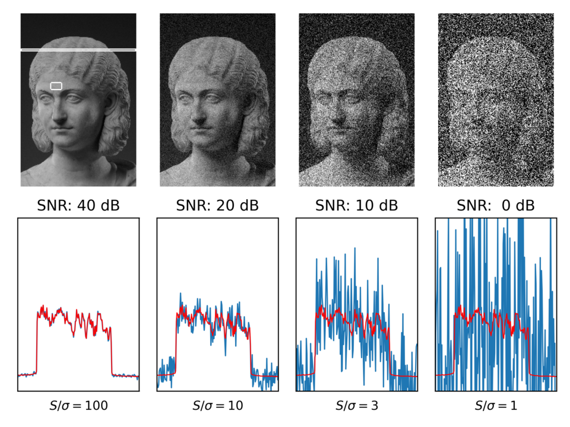

Artisan Technology LLC
Custom software + hardware
Chicago, IL
41.88° N — 87.63° W
custom solution
Artisan Technology
Idea » Prototype » Production
Scroll ↓
01 — the practice
Artisan Technology LLC designs and builds custom software and hardware to solve problems that don't fit off-the-shelf solutions.

02 — principal engineer
Lindsay Moore
I'm a Design Thinker with 10+ years of experience. Really, I'm someone who's spent a decade asking what if we did it this way?
and then building it.
I design systems, build things that matter, and bring a maker's mindset to every problem. I believe the best engineering is equal parts rigor and imagination.
I imagine big, tell the story that illuminates a path, then make sure we all finish together.
03 — the full arc
I like interesting questions and the full arc.
idea
prototype
production
04 — background
Education
- Master's, Computer ScienceUniversity of Chicago
- Master's, InformaticsUniversity of Minnesota
- Bachelor's, Production, Engineering & BusinessMcNally Smith College
Community & research
- Board, Pumping Station: OneChicago's oldest and largest hackerspace
- Research, STAGE CenterA multidisciplinary technology and arts lab at UChicago
- Research, Chicago Virtual ProductionAn independent virtual production group